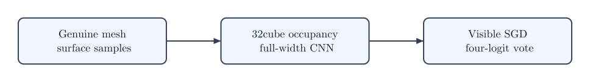
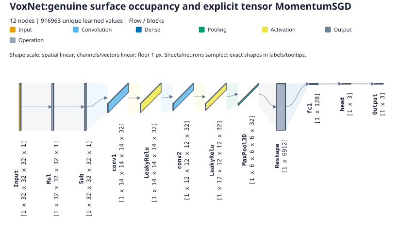
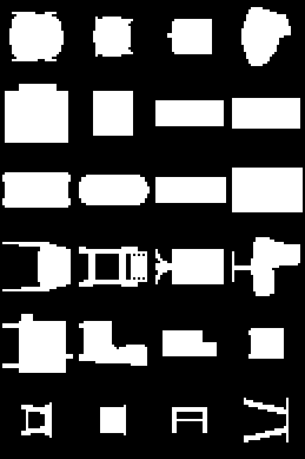
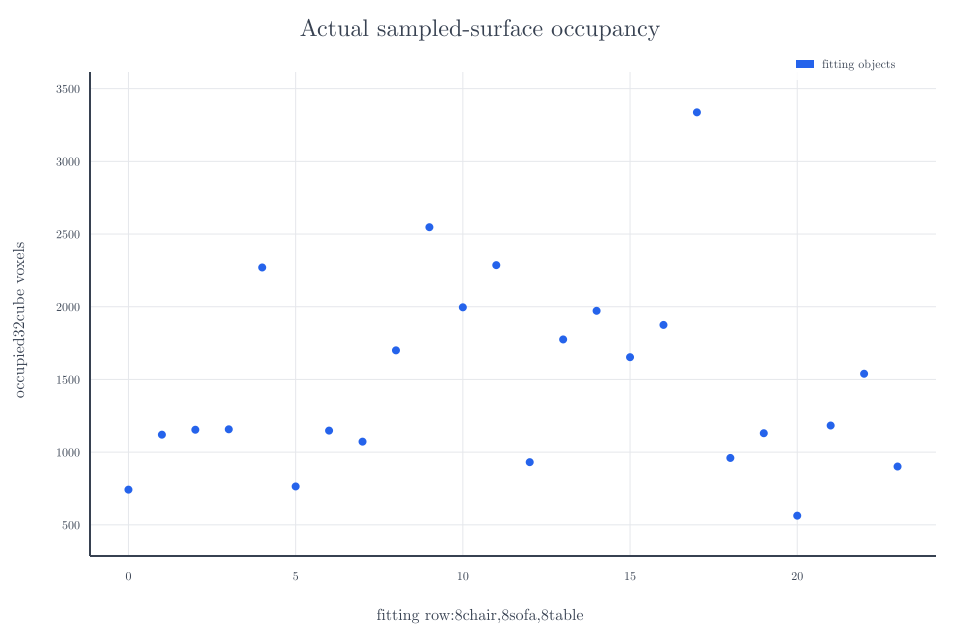
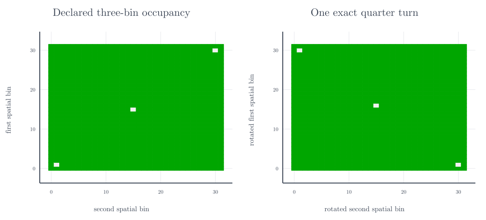
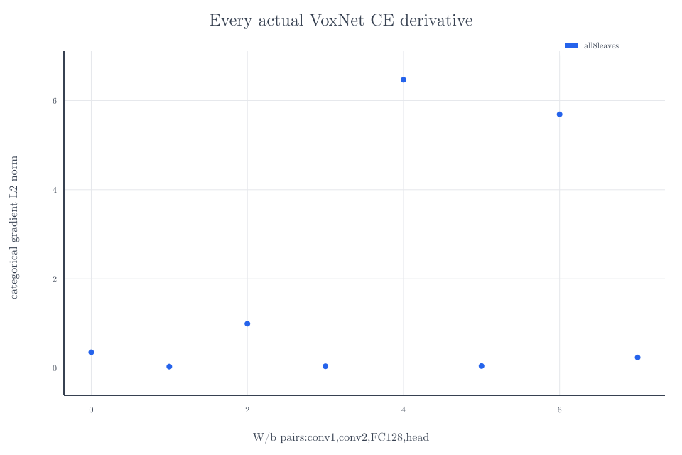
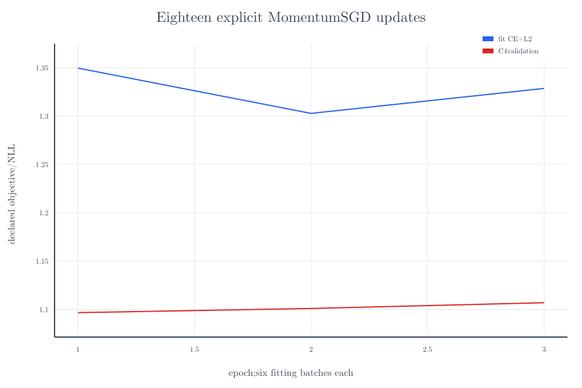
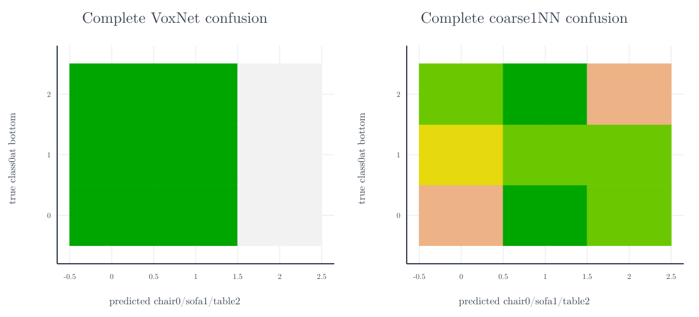
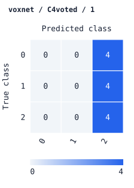

VoxNet:genuine surface occupancy and explicit tensor MomentumSGD
Abstract
Classifying a3Dobject requires relating geometry to its category. Genuine original CAD surfaces become declared tensor occupancy grids;the complete original-width VoxNet shows every regularized MomentumSGD update and every held-out prediction.
Source example: examples/cpp/source/nn/1_convolutional_neural_networks/1.10_3d_and_video_convolutions/voxnet.cpp.
The method
Binary occupancy is mapped to[-1,1]before two3Dconvolutions,pooling and a128unit dense layer. The objective explicitly adds a weight-only sum-of-squares penalty:
The visible MomentumSGD loop fits all eight learned tensors. Four quarter-turn logits are averaged at inference. Reindexing this finite rotation orbit preserves the average up to floating-point accumulation order;this is discrete C4invariance,not arbitrary3Drotation invariance.
The concept diagram below is drawn by dm::graphics::Diagram. Its editable C++
source is the complete block below; regeneration uses the same datamunge toolchain
as the numerical examples. Exports consume the saved local SVG.
#include <dm/dm.hpp>
int main() {
std::filesystem::create_directories("build");
dm::graphics::Diagram diagram;
diagram.node("n0", {0.0, 0}, "Genuine mesh\n surface samples");
diagram.node("n1", {5.2, 0}, "32cube occupancy\n full-width CNN");
diagram.node("n2", {10.4, 0}, "Visible SGD\n four-logit vote");
diagram.edge("n0", "n1").edge("n1", "n2");
diagram.save_svg("build/voxnet_concept.svg");
}
Executed tensor architecture
This figure executes the inference configuration shown in the code, using a zero-valued shape probe without fitting or loading a checkpoint. Named stage boundaries group whole subgraphs where available; other nodes retain functional-layer detail. Exact batch-inclusive shapes and reachable parameter totals come from the trace. Shared linear scales map spatial dimensions and channel counts to blocks; the one-pixel visibility floor is disclosed in the legend. Labels use compact monospace text, rotate counterclockwise and sit beside their own glyphs. Arrows flow left to right; wide diagrams scroll at native size on the website.
#include <dm/dm.hpp>
int main() {
namespace n = dm::nn;
namespace m = n::models;
n::set_num_threads(2);
std::filesystem::create_directories("build");
n::ParameterStore p(907);
n::Module architecture_model(
[&](const n::Tensor& image) { return m::Voxnet(p, image, 3).logits; },
"VoxNet:genuine surface occupancy and explicit tensor MomentumSGD");
n::ModelPlotOptions options;
options.style = n::ModelPlotStyle::Flow;
options.detail = n::ModelPlotDetail::Blocks;
options.labels = {.type = n::ModelPlotLabel::NameAndShape, .size = 12, .wrap = 24};
options.spacing = {.layer = 24, .lane = 12, .label = 8, .margin = 20};
options.sizing.spatial_size = 96;
options.sizing.channel_size = 42;
options.sizing.minimum_extent = 1;
options.opacity = .8;
const auto diagram = architecture_model.plot(n::zeros({1, 32, 32, 32, 1}), options);
diagram.save_svg("build/voxnet_architecture.svg");
std::print(
"{} displayed nodes; {} reachable learned values.\n",
diagram.nodes().size(),
diagram.parameter_count());
}12 displayed nodes; 916963 reachable learned values.

Genuine CAD surfaces and declared occupancy preparation
Use the same42original ModelNet10 chair0/sofa1/table2objects as the point reports:per category,first eight lexical official train objects fit,next two validate,first four official test objects are held out. Original OFF meshes, archive SHA256 and object IDs are retained. This custom three-class subset is not a full ModelNet40 benchmark;cross-source near-duplicate shapes are not certified absent.
The report declares its own sampled-SURFACE occupancy:Double tensors compute triangle areas and65536area-weighted barycentric samples,seed1193+objectID. Center on the original vertex bounding-box midpoint,divide by its maximum half extent,then convert toFloat32. Map floor((xyz+1)*14.5)+1,clamp1..30 and threshold tensor segment counts. The result has an empty one-voxel border. This is not solid filling,triangle/voxel intersection or the published benchmark preparation. Every face draw,uniform pair,center/radius and original object identity is saved for independent reconstruction. No test label influences voxelization.
#include <dm/dm.hpp>
int main() {
const std::filesystem::path cache = dm::datasets::data_home();
dm::datasets::prepare_example_data("mesh", (cache / "modelnet").string());
dm::datasets::prepare_example_data("voxel", (cache / "modelnet").string());
}Show all12held-out objects as axis projections,then inspect genuine fitting occupancy counts. Max projections visualize surface occupancy,not photographs.
#include <dm/dm.hpp>
int main() {
namespace n = dm::nn;
namespace m = n::models;
n::set_num_threads(2);
std::filesystem::path cache;
if (const auto *p = std::getenv("DATAMUNGE_DATA_DIR"))
cache = p;
else if (const auto *p = std::getenv("XDG_CACHE_HOME"))
cache = std::filesystem::path(p) / "datamunge/datasets";
else
cache = std::filesystem::path(std::getenv("HOME")) / ".cache/datamunge/datasets";
std::filesystem::path root = cache / "voxnet";
if (const auto *v = std::getenv("DATAMUNGE_VOXNET_DIR"))
root = v;
else {
dm::datasets::prepare_example_data("voxel", (cache / "modelnet").string());
root = cache / "voxnet";
}
const auto pools = m::LoadVoxnet(root);
const auto &fit = pools[0];
const auto &validation = pools[1];
const auto &test = pools[2];
const auto xy = n::max(test.voxels, {3});
const auto xz = n::max(test.voxels, {2});
n::save_image_grid(n::concat({xy, xz}, 0), "build/voxnet_data.png", 4, 0, 1, 2, 0, 4);
const auto counts = n::sum(fit.voxels, {1, 2, 3, 4});
std::print(
"| held-out source ID | class0chair1sofa2table | occupied voxels |\n|---:|---:|---:|\n");
const auto occupied = n::sum(test.voxels, {1, 2, 3, 4});
for (int i = 0; i < 12; ++i)
std::print("| {} | {} | {} |\n", test.source.at({i}), test.labels.at({i}),
occupied.at({i}));
auto plot = dm::graphics::RPlot::create();
plot.points(n::arange(0, 24).to_vector<double>(), counts.to_vector<double>(),
"fitting objects", {37, 99, 235})
.title("Actual sampled-surface occupancy")
.x_label("fitting row:8chair,8sofa,8table")
.y_label("occupied32cube voxels");
plot.save_svg("build/voxnet_occupancy.svg");
std::filesystem::copy_file("build/voxnet_occupancy.svg", "figures/voxnet_occupancy.svg",
std::filesystem::copy_options::overwrite_existing);
}ModelNet10 fit:24 distinct objects,balanced chair/sofa/table ModelNet10 validation:6 distinct objects,balanced chair/sofa/table ModelNet10 test:12 distinct objects,balanced chair/sofa/table
| held-out source ID | class0chair1sofa2table | occupied voxels |
|---|---|---|
| 10 | 0 | 983 |
| 11 | 0 | 889 |
| 12 | 0 | 1751 |
| 13 | 0 | 1147 |
| 24 | 1 | 3589 |
| 25 | 1 | 2661 |
| 26 | 1 | 1964 |
| 27 | 1 | 2053 |
| 38 | 2 | 1012 |
| 39 | 2 | 640 |
| 40 | 2 | 878 |
| 41 | 2 | 917 |


Hand-checkable bins and quarter turns
Points-1,0,+1in each coordinate map to bins1,15,30. Duplicate points increase counts before thresholding and therefore leave binary occupancy unchanged. A quarter turn transposes the first two spatial axes then reverses the first; four turns close exactly. Only host index metadata controls the transformations.
#include <dm/dm.hpp>
int main() {
namespace n = dm::nn;
namespace m = n::models;
const auto points =
n::from_vector(std::vector<float>{-1, -1, -1, 0, 0, 0, 1, 1, 1, 0, 0, 0}, {1, 4, 3});
const auto occupancy = m::VoxnetOccupancy(points);
std::print("Declared4points with one duplicate produce {}occupied voxels;bins1/15/30 values "
"{}/{}/{}.\n",
n::sum(occupancy).item(), occupancy.at({0, 1, 1, 1, 0}),
occupancy.at({0, 15, 15, 15, 0}), occupancy.at({0, 30, 30, 30, 0}));
auto x = occupancy;
for (int k = 0; k < 4; ++k)
x = m::VoxnetRotate(x, 1);
if (n::max(n::abs(x - occupancy)).item() != 0)
return 1;
auto a = n::plot_tensor_map(
n::reverse(n::select(n::select(n::max(occupancy, {3}), 0, 0), 2, 0), {0}), 0, 1),
b = n::plot_tensor_map(
n::reverse(
n::select(n::select(n::max(m::VoxnetRotate(occupancy, 1), {3}), 0, 0), 2, 0),
{0}),
0, 1);
a.title("Declared three-bin occupancy")
.x_label("second spatial bin")
.y_label("first spatial bin");
b.title("One exact quarter turn")
.x_label("rotated second spatial bin")
.y_label("rotated first spatial bin");
auto layout = dm::graphics::RLayout::create(1, 2);
layout.add(a).add(b).size(1100, 500).fit_panels().save_svg("build/voxnet_rotation.svg");
}Declared4points with one duplicate produce 3occupied voxels;bins1/15/30 values 1/1/1.

Full original-width graph and explicit weight penalty
The complete model uses conv5/stride2/32LeakyReLU.1,dropout.2, conv3/stride1/32LeakyReLU.1,maxpool2,dropout.3,flatten6912,FC128ReLU, dropout.4,linear categorical head. Convolutions are VALID with HeNormal weights; dense weights are Normal.01,biases0. There is no BN. Changing40classes to3only changes the head:921736versus916963learned scalars,eight tensor leaves in each. Native tests actually execute the full40class graph and all learned derivatives on real occupancy,not just an analytical reference census.
For the source weight-only objective L=CE+.001*sum(W squared),the gradient is CEgrad+.002W on named weights;biases remain unregularized. This is a coupled sum-of-squares penalty,not decoupled optimizer decay or mean weight-square loss.
#include <dm/dm.hpp>
int main() {
namespace n = dm::nn;
namespace m = n::models;
n::set_num_threads(2);
std::filesystem::path cache;
if (const auto *p = std::getenv("DATAMUNGE_DATA_DIR"))
cache = p;
else if (const auto *p = std::getenv("XDG_CACHE_HOME"))
cache = std::filesystem::path(p) / "datamunge/datasets";
else
cache = std::filesystem::path(std::getenv("HOME")) / ".cache/datamunge/datasets";
std::filesystem::path root = cache / "voxnet";
if (const auto *v = std::getenv("DATAMUNGE_VOXNET_DIR"))
root = v;
else {
dm::datasets::prepare_example_data("voxel", (cache / "modelnet").string());
root = cache / "voxnet";
}
const auto pools = m::LoadVoxnet(root);
const auto &fit = pools[0];
const auto &validation = pools[1];
const auto &test = pools[2];
n::ParameterStore p(907);
m::VoxnetDropout dropout;
{
n::NoGradGuard guard;
m::Voxnet(p, n::zeros({1, 32, 32, 32, 1}), 3);
}
auto predict = [&](const n::Tensor &input, bool vote = true) {
n::NoGradGuard guard;
std::vector<n::Tensor> parts;
for (std::int64_t start = 0; start < input.size(0); start += 4) {
const auto x =
n::slice_axis(input, 0, start, std::min<std::int64_t>(start + 4, input.size(0)));
auto y = m::Voxnet(p, x, 3).logits;
if (vote) {
for (int k = 1; k < 4; ++k)
y = y + m::Voxnet(p, m::VoxnetRotate(x, k), 3).logits;
y = y / 4.;
}
parts.push_back(y);
}
return n::concat(parts, 0);
};
const auto d = m::VoxnetRows(fit, {0, 8, 16, 1});
const auto out = m::Voxnet(p, d.voxels, 3, true, &dropout);
const auto loss = n::sparse_softmax_cross_entropy(out.logits, d.labels);
const auto gs = n::grad(loss, p.parameters()), regularized = m::VoxnetRegularized(p, gs);
std::vector<n::Tensor> norms;
std::print(
"| learned tensor | shape | CE gradient L2 | regularized L2 |\n|---|---|---:|---:|\n");
for (std::size_t i = 0; i < p.size(); ++i) {
const auto norm = n::sqrt(n::sum(n::square(gs[i])));
if (!n::all(n::is_finite(gs[i])).item<bool>() || norm.item() <= 0)
return 1;
norms.push_back(norm);
std::print("| {} | {} | {:.6g} | {:.6g} |\n", p.names()[i], p.parameters()[i].shape(),
norm.item(), n::sqrt(n::sum(n::square(regularized[i]))).item());
}
std::print("Actual916963values/{}learned leaves;conv1 {},conv2 {},pool {},flat {},FC {}.\n",
p.size(), out.conv1.shape(), out.conv2.shape(), out.pool.shape(),
out.flat.shape(), out.fc1.shape());
auto plot = dm::graphics::RPlot::create();
plot.points(n::arange(0, 8).to_vector<double>(), n::stack(norms, 0).to_vector<double>(),
"all8leaves", {37, 99, 235})
.title("Every actual VoxNet CE derivative")
.x_label("W/b pairs:conv1,conv2,FC128,head")
.y_label("categorical gradient L2 norm");
plot.save_svg("build/voxnet_gradients.svg");
}ModelNet10 fit:24 distinct objects,balanced chair/sofa/table ModelNet10 validation:6 distinct objects,balanced chair/sofa/table ModelNet10 test:12 distinct objects,balanced chair/sofa/table
| learned tensor | shape | CE gradient L2 | regularized L2 |
|---|---|---|---|
| conv1/W | [5, 5, 5, 1, 32] | 0.349029 | 0.349757 |
| conv1/b | [32] | 0.0293984 | 0.0293984 |
| conv2/W | [3, 3, 3, 32, 32] | 0.992469 | 0.992725 |
| conv2/b | [32] | 0.0368079 | 0.0368079 |
| fc1/W | [6912, 128] | 6.46439 | 6.46444 |
| fc1/b | [128] | 0.0428641 | 0.0428641 |
| head/W | [128, 3] | 5.69143 | 5.69146 |
| head/b | [3] | 0.23386 | 0.23386 |
Actual916963values/8learned leaves;conv1 [4, 14, 14, 14, 32],conv2 [4, 12, 12, 12, 32],pool [4, 6, 6, 6, 32],flat [4, 6912],FC [4, 128].

Every tensor MomentumSGD update and C4 vote
Warm all eight learned tensors before MomentumSGD(.001,momentum.9). Parameter seed907,independent dropout seeds881/883/887. The source first-four-object CE probe advances all three RNG streams before fitting. Order919,batch4,three epochs give18updates;mt19937seed929 draws one quarter turn per entire batch. All numeric image transformation,loss,regularization,gradients and updates remain tensor operations. Validation averages the four rotated LOGITS before computing NLL;averaging softmax probabilities would be a different rule.
#include <dm/dm.hpp>
int main() {
namespace n = dm::nn;
namespace m = n::models;
n::set_num_threads(2);
std::filesystem::path cache;
if (const auto *p = std::getenv("DATAMUNGE_DATA_DIR"))
cache = p;
else if (const auto *p = std::getenv("XDG_CACHE_HOME"))
cache = std::filesystem::path(p) / "datamunge/datasets";
else
cache = std::filesystem::path(std::getenv("HOME")) / ".cache/datamunge/datasets";
std::filesystem::path root = cache / "voxnet";
if (const auto *v = std::getenv("DATAMUNGE_VOXNET_DIR"))
root = v;
else {
dm::datasets::prepare_example_data("voxel", (cache / "modelnet").string());
root = cache / "voxnet";
}
const auto pools = m::LoadVoxnet(root);
const auto &fit = pools[0];
const auto &validation = pools[1];
const auto &test = pools[2];
n::ParameterStore p(907);
m::VoxnetDropout dropout;
{
n::NoGradGuard guard;
m::Voxnet(p, n::zeros({1, 32, 32, 32, 1}), 3);
}
auto predict = [&](const n::Tensor &input, bool vote = true) {
n::NoGradGuard guard;
std::vector<n::Tensor> parts;
for (std::int64_t start = 0; start < input.size(0); start += 4) {
const auto x =
n::slice_axis(input, 0, start, std::min<std::int64_t>(start + 4, input.size(0)));
auto y = m::Voxnet(p, x, 3).logits;
if (vote) {
for (int k = 1; k < 4; ++k)
y = y + m::Voxnet(p, m::VoxnetRotate(x, k), 3).logits;
y = y / 4.;
}
parts.push_back(y);
}
return n::concat(parts, 0);
};
const auto initial = m::ScoreSequenceClassifier(predict(fit.voxels), fit.labels).nll;
const auto untrained = predict(test.voxels);
const auto probe = m::VoxnetRows(fit, {0, 8, 16, 1});
const auto gs =
n::grad(n::sparse_softmax_cross_entropy(
m::Voxnet(p, probe.voxels, 3, true, &dropout).logits, probe.labels),
p.parameters());
for (const auto &g : gs)
if (!n::all(n::is_finite(g)).item<bool>() || n::sum(n::square(g)).item() <= 0)
return 1;
n::OptimizerConfig options;
options.kind = n::OptimizerKind::Momentum;
options.momentum = .9;
n::Optimizer sgd(p, .001, options);
n::BatchOrder order(24, 4, 919);
std::mt19937 turns(929);
double best = INFINITY;
int selected = 0, updates = 0;
std::vector<n::Tensor> history;
std::print("| epoch | dropout CE+L2 | validation C4-logit NLL |\n|---:|---:|---:|\n");
for (int epoch = 1; epoch <= 3; ++epoch) {
order.begin_epoch();
auto average = n::zeros({}, n::DType::Float64);
for (;;) {
const auto rows = order.next();
if (rows.empty())
break;
auto batch = m::VoxnetRows(fit, rows);
batch.voxels =
m::VoxnetRotate(batch.voxels, std::uniform_int_distribution<int>(0, 3)(turns));
const auto ce = n::sparse_softmax_cross_entropy(
m::Voxnet(p, batch.voxels, 3, true, &dropout).logits, batch.labels);
auto penalty = n::zeros({}, n::DType::Float64);
{
n::NoGradGuard guard;
for (const auto &name : p.names())
if (name.ends_with("/W"))
penalty = penalty + n::sum(n::square(p.at(name))).to(n::DType::Float64) * .001;
}
average = average + (ce.detach().to(n::DType::Float64) + penalty) / 6.;
sgd.step(m::VoxnetRegularized(p, n::grad(ce, p.parameters()), .001));
++updates;
}
const auto val =
m::ScoreSequenceClassifier(predict(validation.voxels), validation.labels).nll;
if (val.item() < best) {
best = val.item();
selected = epoch;
n::NamedTensors arrays;
for (std::size_t i = 0; i < p.size(); ++i)
arrays.push_back({p.names()[i], p.parameters()[i]});
n::save_npz("build/voxnet_best.npz", arrays);
}
history.push_back(n::stack({average, val}, 0));
std::print("| {} | {:.6f} | {:.6f} |\n", epoch, average.item(), val.item());
}
for (const auto &[key, value] : n::load_npz("build/voxnet_best.npz"))
p.set(key, value);
const auto fitted = m::ScoreSequenceClassifier(predict(fit.voxels), fit.labels).nll;
n::save_npz("build/voxnet_outputs.npz",
{{"logits", predict(test.voxels)}, {"untrained", untrained}});
std::print("{}explicit MomentumSGD updates,selected {},validation {:.6f};fixed C4fit NLL "
"{:.9f}->{:.9f}.\n",
updates, selected, best, initial.item(), fitted.item());
const auto h = n::stack(history, 0);
auto plot = dm::graphics::RPlot::create();
plot.lines(n::arange(1, 4).to_vector<double>(), n::select(h, 1, 0).to_vector<double>(),
"fit CE+L2", {37, 99, 235})
.lines(n::arange(1, 4).to_vector<double>(), n::select(h, 1, 1).to_vector<double>(),
"C4validation", {220, 38, 38})
.title("Eighteen explicit MomentumSGD updates")
.x_label("epoch;six fitting batches each")
.y_label("declared objective/NLL");
plot.save_svg("build/voxnet_training.svg");
}ModelNet10 fit:24 distinct objects,balanced chair/sofa/table ModelNet10 validation:6 distinct objects,balanced chair/sofa/table ModelNet10 test:12 distinct objects,balanced chair/sofa/table
| epoch | dropout CE+L2 | validation C4-logit NLL |
|---|---|---|
| 1 | 1.349562 | 1.096750 |
| 2 | 1.302746 | 1.101050 |
| 3 | 1.328580 | 1.106999 |
18explicit MomentumSGD updates,selected 1,validation 1.096750;fixed C4fit NLL 1.106853195->1.103441973.

Validation selects epoch 1 with four-view NLL of 1.096750. Fixed fitting four-view NLL falls from 1.106853195 to 1.103441973. The model labels all held-out objects as tables, for 4/12 accuracy and NLL of 1.102454. The coarse 1-NN reference gets 7/12 correct with NLL of 0.968111.
Fresh occupancy-only restoration and every held-out error
Restore into a fresh eight-leaf store. Verify saved/repeated logits,single/batch parity,all parameters unchanged and C4vote invariance under orbit permutation. Single-view logits may change with orientation even when the vote stays fixed. The coarse occupancy1NN reference has no learned parameters;fitting-only population standardization and pairwise distances are tensor operations.
#include <dm/dm.hpp>
int main() {
namespace n = dm::nn;
namespace m = n::models;
n::set_num_threads(2);
std::filesystem::path cache;
if (const auto *p = std::getenv("DATAMUNGE_DATA_DIR"))
cache = p;
else if (const auto *p = std::getenv("XDG_CACHE_HOME"))
cache = std::filesystem::path(p) / "datamunge/datasets";
else
cache = std::filesystem::path(std::getenv("HOME")) / ".cache/datamunge/datasets";
std::filesystem::path root = cache / "voxnet";
if (const auto *v = std::getenv("DATAMUNGE_VOXNET_DIR"))
root = v;
else {
dm::datasets::prepare_example_data("voxel", (cache / "modelnet").string());
root = cache / "voxnet";
}
const auto pools = m::LoadVoxnet(root);
const auto &fit = pools[0];
const auto &validation = pools[1];
const auto &test = pools[2];
n::ParameterStore p(907);
m::VoxnetDropout dropout;
{
n::NoGradGuard guard;
m::Voxnet(p, n::zeros({1, 32, 32, 32, 1}), 3);
}
auto predict = [&](const n::Tensor &input, bool vote = true) {
n::NoGradGuard guard;
std::vector<n::Tensor> parts;
for (std::int64_t start = 0; start < input.size(0); start += 4) {
const auto x =
n::slice_axis(input, 0, start, std::min<std::int64_t>(start + 4, input.size(0)));
auto y = m::Voxnet(p, x, 3).logits;
if (vote) {
for (int k = 1; k < 4; ++k)
y = y + m::Voxnet(p, m::VoxnetRotate(x, k), 3).logits;
y = y / 4.;
}
parts.push_back(y);
}
return n::concat(parts, 0);
};
for (const auto &[key, value] : n::load_npz("build/voxnet_best.npz"))
p.set(key, value);
const auto before = p.flatten();
n::Tensor saved, untrained;
for (const auto &[key, value] : n::load_npz("build/voxnet_outputs.npz")) {
if (key == "logits")
saved = value;
if (key == "untrained")
untrained = value;
}
const auto logits = predict(test.voxels),
single = predict(n::slice_axis(test.voxels, 0, 0, 1)),
canonical = predict(test.voxels, false),
rotated = predict(m::VoxnetRotate(test.voxels, 1)),
rotated_single = predict(m::VoxnetRotate(test.voxels, 1), false);
const auto parity = n::max(n::abs(logits - saved)),
batch = n::max(n::abs(single - n::slice_axis(logits, 0, 0, 1))),
orbit = n::max(n::abs(logits - rotated)),
change = n::sum(n::abs(canonical - rotated_single));
if (parity.item() != 0 || n::max(n::abs(logits - predict(test.voxels))).item() != 0 ||
batch.item() > 1e-6 || orbit.item() > 1e-6 || change.item() <= 1e-7 ||
before != p.flatten())
return 1;
std::print("Fresh restore/repeat {},single/batch {:.9g},C4orbit {:.9g};single-view rotation "
"L1 {:.9g};all8leaves immutable.\n",
parity.item(), batch.item(), orbit.item(), change.item());
const auto nearest = m::VoxnetNearest(fit, test);
std::vector<std::pair<std::string, n::Tensor>> predictions = {
{"C4voted", logits},
{"single view", canonical},
{"initial C4", untrained},
{"coarse1NN", nearest},
{"rotated single", rotated_single},
{"balanced tie", n::zeros({12, 3})}};
std::print("| predictor | accuracy | macroF1 | NLL | all recalls | all confusion counts "
"|\n|---|---:|---:|---:|---|---|\n");
for (const auto &[name, z] : predictions) {
const auto score = m::ScoreSensor(z, test.labels, 3);
std::print("| {} | {:.6f} | {:.6f} | {:.6f} | {} | {} |\n", name, score.accuracy,
score.macro_f1, score.nll, score.recall, score.confusion);
}
{
n::ConfusionMatrix current_counts(3);
current_counts.add(test.labels, n::argmax(logits, 1));
n::save_npz("build/voxnet_heldout_"+std::string("0")+".npz",{{"truth",test.labels},{"logits",logits},{"counts",current_counts.to_tensor()}});
}
const auto labels = n::argmax(logits, 1);
std::print("\n| source ID | true class | learned class |\n|---:|---:|---:|\n");
for (int i = 0; i < 12; ++i)
std::print("| {} | {} | {} |\n", test.source.at({i}), test.labels.at({i}), labels.at({i}));
auto a = n::plot_tensor_map(
n::reverse(m::ScoreSequenceClassifier(logits, test.labels).confusion, {0}), 0, 4),
b = n::plot_tensor_map(
n::reverse(m::ScoreSequenceClassifier(nearest, test.labels).confusion, {0}), 0, 4);
a.title("Complete VoxNet confusion")
.x_label("predicted chair0/sofa1/table2")
.y_label("true class0at bottom");
b.title("Complete coarse1NN confusion")
.x_label("predicted chair0/sofa1/table2")
.y_label("true class0at bottom");
auto layout = dm::graphics::RLayout::create(1, 2);
layout.add(a).add(b).size(1100, 500).fit_panels().save_svg("build/voxnet_confusion.svg");
}ModelNet10 fit:24 distinct objects,balanced chair/sofa/table ModelNet10 validation:6 distinct objects,balanced chair/sofa/table ModelNet10 test:12 distinct objects,balanced chair/sofa/table Fresh restore/repeat 0,single/batch 0,C4orbit 7.4505806e-09;single-view rotation L1 1.19293356;all8leaves immutable.
| predictor | accuracy | macroF1 | NLL | all recalls | all confusion counts |
|---|---|---|---|---|---|
| C4voted | 0.333333 | 0.166667 | 1.102454 | [0, 0, 1] | [0, 0, 4, 0, 0, 4, 0, 0, 4] |
| single view | 0.250000 | 0.133333 | 1.112723 | [0, 0, 0.75] | [0, 0, 4, 0, 0, 4, 0, 1, 3] |
| initial C4 | 0.250000 | 0.142857 | 1.100081 | [0, 0.75, 0] | [0, 3, 1, 0, 3, 1, 0, 4, 0] |
| coarse1NN | 0.583333 | 0.555556 | 0.968111 | [0.75, 0.25, 0.75] | [3, 0, 1, 2, 1, 1, 1, 0, 3] |
| rotated single | 0.333333 | 0.166667 | 1.097219 | [0, 0, 1] | [0, 0, 4, 0, 0, 4, 0, 0, 4] |
| balanced tie | 0.333333 | 0.166667 | 1.098612 | [1, 0, 0] | [4, 0, 0, 4, 0, 0, 4, 0, 0] |
| source ID | true class | learned class |
|---|---|---|
| 10 | 0 | 2 |
| 11 | 0 | 2 |
| 12 | 0 | 2 |
| 13 | 0 | 2 |
| 24 | 1 | 2 |
| 25 | 1 | 2 |
| 26 | 1 | 2 |
| 27 | 1 | 2 |
| 38 | 2 | 2 |
| 39 | 2 | 2 |
| 40 | 2 | 2 |
| 41 | 2 | 2 |

Annotated confusion counts
The following program replots the current held-out evaluation counts printed in the
predictor tables above. It reproduces those recorded measurements without refitting
or re-evaluating the model. ConfusionMatrix::from_counts owns the integer tensor
counts and save_svg labels every cell. True class zero is the *top* row and
predicted class zero the left column. Counts are exact; colors use the observed
count range. Source class meanings remain those declared for the dataset above.
#include <dm/dm.hpp>
int main() {
namespace n = dm::nn;
std::filesystem::create_directories("build");
{
n::Tensor counts;
for (const auto &[key, value] : n::load_npz("build/voxnet_heldout_0.npz"))
if (key == "counts") counts = value;
const auto matrix = n::ConfusionMatrix::from_counts(counts);
matrix.save_svg(
"build/voxnet_confusion_api_0.svg",
{.title = "voxnet / C4voted / 1", .cell_size = 52, .font_size = 13});
std::print("Current evaluation 1: 12 observations; accuracy {:.6f}.\n", matrix.accuracy());
}
}Current evaluation 1: 12 observations; accuracy 0.333333.

Regenerate adjacent views from this run
#include <dm/dm.hpp>
int main(){std::filesystem::copy_file("build/voxnet_occupancy.svg","build/export_voxnet_occupancy.svg",std::filesystem::copy_options::overwrite_existing);}Conclusion
The architecture,regularization and discrete rotation mechanism are checked independently from held-out quality. Complete source identities and a declared sampled-surface preparation make the tiny custom42object experiment reproducible without a published voxelization or benchmark accuracy claim.
References
- [Maturana and Scherer(2015),VoxNet:A3DConvolutional Neural Network for Real-Time Object Recognition](https://publications.ri.cmu.edu/voxnet-a-3d-convolutional-neural-network-for-real-time-object-recognition).
- [Original Princeton ModelNet data](https://3dvision.princeton.edu/projects/2014/3DShapeNets/).